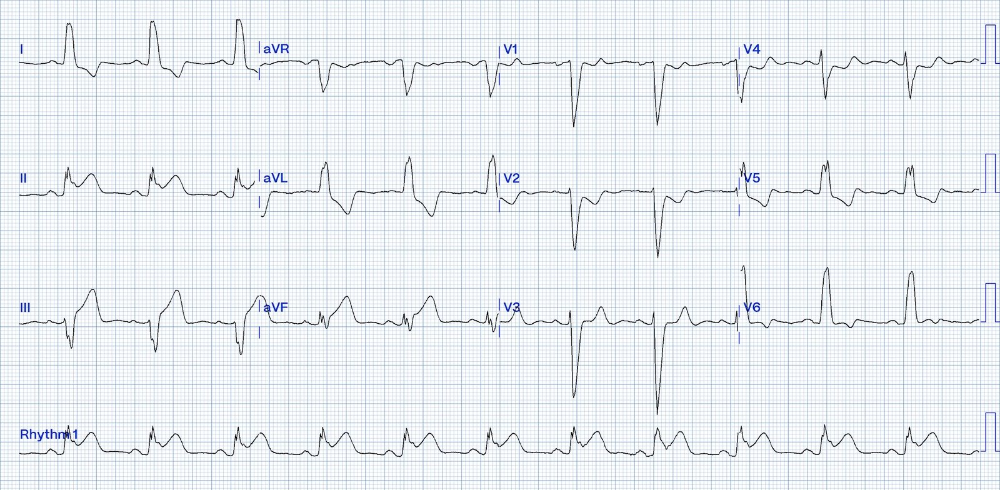
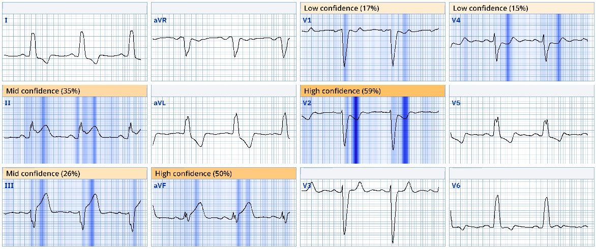
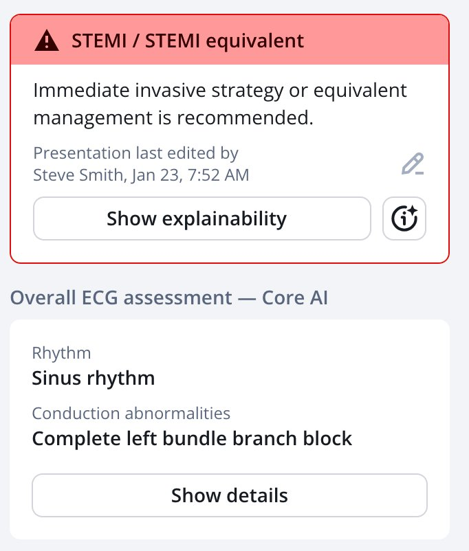
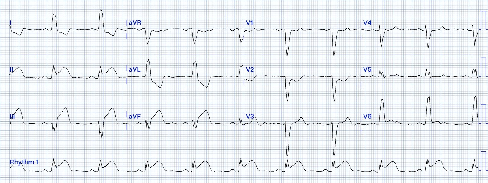
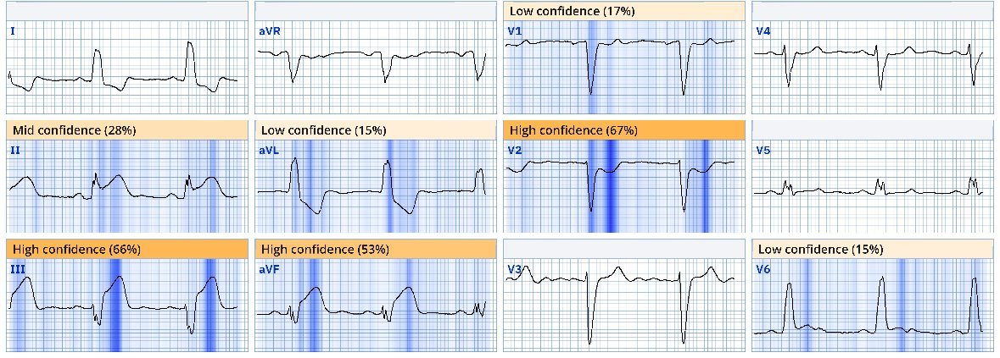
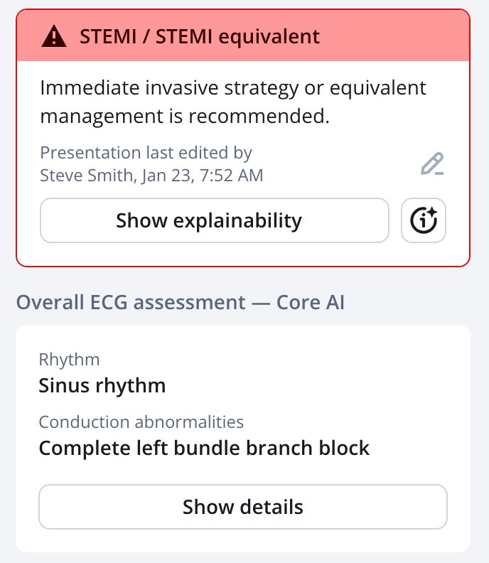
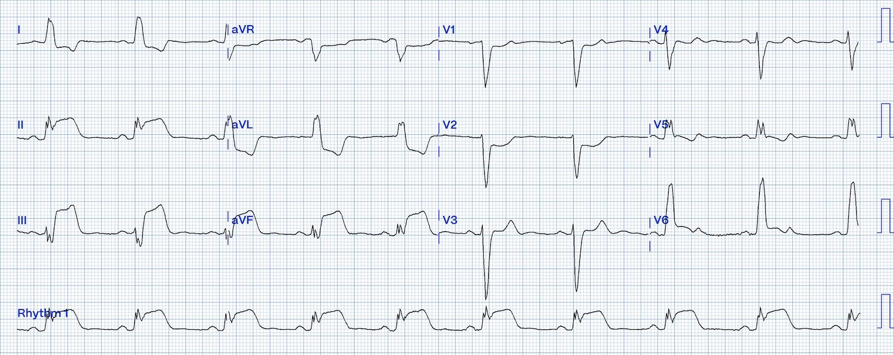
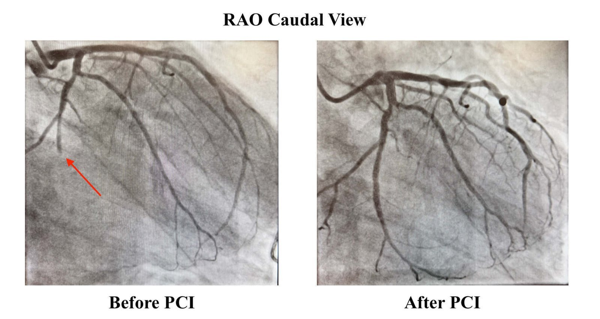
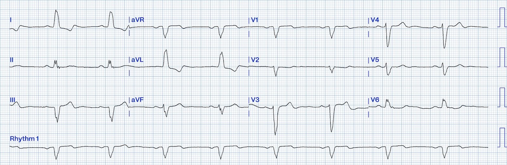
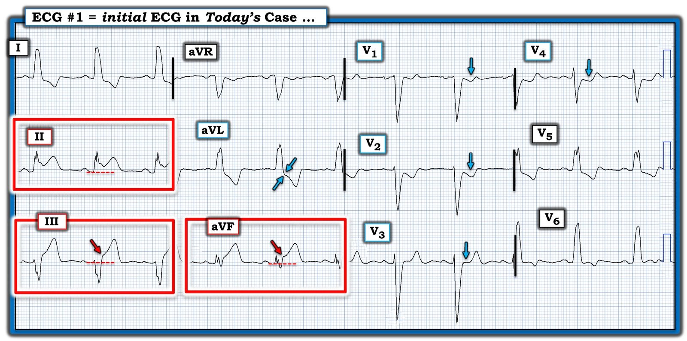

23/01/2025 — Đau ngực cấp kèm LBBB và OMI hiển nhiên, nặng dần trên các điện tâm đồ liên tiếp, nhưng nhiều lần bị bác sĩ và thuật toán Marquette 12SL bỏ sót
Bản dịch tiếng Việt của bài "Acute chest pain with LBBB and obvious OMI, worsening on serial ECGs, but repeatedly missed by physicians and Marquette 12SL" – Dr. Smith’s ECG Blog. Giữ nguyên toàn bộ 10 hình ảnh của bản gốc.
Ca này do Hans Helseth viết. Cậu ấy vừa tốt nghiệp đại học. Cậu ấy không được đào tạo y khoa, nhưng đã đọc blog này nhiều năm. Cậu ấy là kỹ thuật viên điện tâm đồ và hy vọng sẽ vào trường y.
- Hans chưa bao giờ bị "đầu độc" bởi mô hình STEMI/NSTEMI vì cậu ấy chưa từng học trường y. Hans thật may mắn.
- Bạn không cần được đào tạo y khoa mới nhận ra OMI trên điện tâm đồ. Bạn cần tò mò, có đầu óc cởi mở, có lẽ cần có năng khiếu nhận diện hình ảnh, và đọc thật nhiều bài trên blog này (bạn còn thấy hàng trăm ca OMI kín đáo ở đâu khác nữa?).
Mặc dù các điện tâm đồ hôm nay là rõ ràng (tôi hy vọng vậy) với phần lớn mọi người — việc mọi nhân viên y tế đều giỏi đọc điện tâm đồ để phát hiện OMI là không thực tế. Việc đó đòi hỏi quá nhiều thời gian lẫn quá nhiều năng lực nhận diện hình ảnh. Đó chính là lý do đây là một tình huống ứng dụng hoàn hảo cho AI, và chúng tôi đã tạo ra mô hình AI điện tâm đồ PM Cardio Queen of Hearts để làm việc này thay bạn. Mô hình đang chờ FDA phê duyệt (nhưng đã được phê duyệt 1.5 năm nay tại EU).
- Dù các điện tâm đồ này rõ ràng, chúng vẫn bị bỏ sót bởi cả các bác sĩ cấp cứu có chứng chỉ chuyên khoa LẪN thuật toán Marquette 12SL Conventional!
= = =
Ca bệnh:
Một người đàn ông 76 tuổi bị tăng huyết áp mạn tính nhưng không có tiền sử bệnh mạch vành hay nhồi máu cơ tim, đến khoa cấp cứu (ED) vì đau ngực lúc 2343.
- Điện tâm đồ lúc phân loại (triage) của ông được trình bày dưới đây:


= = =
Có LBBB (blốc nhánh trái), vì vậy điện tâm đồ trên phải được đánh giá thiếu máu cục bộ bằng tiêu chuẩn Sgarbossa cải biên theo Smith.
- Có ST chênh lên ở các chuyển đạo dưới. Cụ thể, có ST chênh lên ngược hướng không tương xứng ở chuyển đạo III (ST chênh lên lớn hơn 25% chiều cao phức bộ QRS) và ST chênh lên đồng hướng ở chuyển đạo II và aVF. Các chuyển đạo này đều có sóng T tối cấp lớn.
- Cũng có bằng chứng thiếu máu cục bộ xuyên thành ở thành sau. Các chuyển đạo V1 đến V4 có sóng T dạng xuống-lên (down-up) điển hình của thiếu máu cục bộ và không điển hình của LBBB. Có ST chênh xuống đồng hướng ở V2 và V4. Dù điểm J ở chuyển đạo V1 và V3 có thể không cho thấy ST chênh xuống, khi có LBBB các chuyển đạo này lẽ ra phải có ST chênh lên. Vì vậy chúng biểu hiện “ST chênh xuống tương đối”.
- Cũng có bằng chứng tổn thương thành bên ở V6, nơi điểm J đẳng điện thay vì ST chênh xuống ngược hướng như dự kiến.
Nhìn chung, điện tâm đồ này đáp ứng tiêu chuẩn Sgarbossa cải biên theo Smith ở nhiều chuyển đạo. Để dương tính theo tiêu chuẩn, chỉ cần dương tính ở một chuyển đạo!
- Nói cách khác, điện tâm đồ này chẩn đoán rõ rệt và hiển nhiên OMI thành dưới, thành sau và thành bên.
= = =
Đáng tiếc, bác sĩ khoa cấp cứu đã không nhận ra điện tâm đồ đặc trưng bệnh này. Kết luận cuối cùng là “Nhịp xoang kèm LBBB. Không có điện tâm đồ cũ để so sánh. Không ghi nhận thay đổi thiếu máu cục bộ cấp nào khác.”
- Thuật toán Marquette 12 SL chỉ đánh dấu điện tâm đồ là bất thường do blốc nhánh trái.
- Queen of Hearts nhận ra đây là OMI (“STEMI/Tương đương STEMI”).




= = =
Lúc 0012, kết quả troponin T độ nhạy cao đầu tiên (URL 15 ng/L) là 29, tăng nhẹ. Ngay cả khi không có dấu hiệu trên điện tâm đồ, một bệnh nhân đau ngực dai dẳng kèm troponin mới tăng cũng nên được đưa vào phòng thông tim (cath lab) theo các hướng dẫn hiện hành, nhưng các hướng dẫn này hầu như không bao giờ được tuân thủ). Hơn nữa, không bao giờ nên chờ troponin khi điện tâm đồ đã có giá trị chẩn đoán — cơ tim đang chết dần trong lúc bạn chờ.
Bác sĩ khoa cấp cứu ghi lại điện tâm đồ lúc 0029, gần 2 giờ sau đó:


Có các thay đổi động (dynamic) của thiếu máu cục bộ tiếp diễn:
- Mức ST chênh lên và kích thước sóng T ở tất cả các chuyển đạo dưới đã tăng.
- Sóng T đảo ngược ở V2 đã trở nên rõ rệt hơn.
- Lúc này đã xuất hiện ST chênh lên ở V6.
= = =
Nhưng không thay đổi nào trong số này được nhận ra.
- Kết luận của bác sĩ ghi “Điện tâm đồ ghi lại cho thấy blốc nhánh trái có vẻ ổn định. Không có thay đổi cấp nào khác”.
- Thuật toán Marquette 12 SL một lần nữa chỉ ghi nhận LBBB.
= = =
Queen of Hearts cũng nhận ra điện tâm đồ này là OMI.




= = =
Bệnh nhân chờ ở khoa cấp cứu thêm một giờ 15 phút nữa.
- Điện tâm đồ thứ 3 được ghi lúc 0144 vì điều dưỡng nhận thấy thay đổi ST chênh lên trên monitor của bệnh nhân:


= = =
Lúc này có ST chênh lên rất lớn, tới 6-7mm ở chuyển đạo III!
- Thật đáng kinh ngạc, thuật toán Marquette 12 SL vẫn chỉ nhận ra LBBB.
- Kết luận của bác sĩ cho điện tâm đồ này ghi: “Điện tâm đồ ghi lại vẫn còn LBBB. Nhìn chung hình dạng tương tự nhưng ghi nhận một số thay đổi ở các chuyển đạo dưới với điểm J nâng lên. Khó diễn giải do LBBB.”
Thật khó tin khi những dấu hiệu hiển nhiên với những người thực sự hiểu điện tâm đồ — lại là điều khó hiểu với quá nhiều bác sĩ.
- Lúc 0208, nhân viên khoa cấp cứu liên hệ khoa tim mạch để trao đổi về ca bệnh. Khoa tim mạch quyết định kích hoạt phòng thông tim khẩn cấp vì “chênh lên khá nhiều ở II, III và aVF”.
- Lúc 0210, kết quả troponin lặp lại là 84.
= = =
Cuối cùng bệnh nhân được đưa đi chụp mạch lúc 0303, 3 giờ 20 phút sau điện tâm đồ có giá trị chẩn đoán đầu tiên:


= = =
Có tắc hoàn toàn do huyết khối ở một nhánh bờ tù lớn xuất phát từ động mạch mũ, nhánh cấp máu cho thành dưới và thành sau. (Xem mục Terminology and Semantics (Thuật ngữ và ngữ nghĩa) trong Cardiac Cath Guide của Willy Frick). Tổn thương được điều trị bằng stent phủ thuốc (DES).
- Điện tâm đồ này được ghi sau PCI:


= = =
Phần lớn các dấu hiệu OMI đã hết (dù STD ở V2 vẫn còn) — kèm các dấu hiệu tái tưới máu (sóng T đảo ngược phần cuối ở III, với sóng T dương phần cuối soi gương ở I, aVL và V6).
- Siêu âm tim sau thông tim cho thấy rối loạn vận động thành sau, với phân suất tống máu 55%. (Bệnh nhân này có lẽ có phân suất tống máu 65-70% trước khi bị nhồi máu cơ tim).
- Không xét nghiệm troponin nào được lấy sau chụp mạch.
= = =
==================================
BÌNH LUẬN CỦA TÔI, bởi KEN GRAUER, MD (23/1/2025 — Cập nhật cho WordPress ngày 12/8/2026):
Vấn đề đánh giá điện tâm đồ của bệnh nhân có CP (đau ngực – Chest Pain) mới xuất hiện và LBBB (blốc nhánh trái – Left Bundle Branch Block) định kỳ lại nổi lên. Giáo điều trước đây cho rằng không thể nhận ra tắc mạch vành cấp khi có LBBB. Dù giáo điều này đã bị vạch trần là sai lầm từ lâu — vẫn còn quá nhiều nhân viên y tế “mắc kẹt” với quan niệm rằng LBBB che lấp các dấu hiệu điện tâm đồ của nhồi máu cấp.
- Đúng là LBBB có thể khiến việc nhận ra các dấu hiệu điện tâm đồ của thiếu máu cục bộ và nhồi máu cấp khó khăn hơn — nhưng sự hiện diện của rối loạn dẫn truyền này chắc chắn không ngăn cản chúng ta đánh giá chính xác tắc mạch vành cấp trong nhiều (phần lớn?) trường hợp.
- Chúng tôi đã thường xuyên điểm lại các ca minh họa về chủ đề này (Xem Bình luận của tôi trong bài ngày 17 tháng Chín năm 2020 và bài ngày 7 tháng Tư năm 2019, cùng nhiều bài khác). Ca hôm nay là thêm một ví dụ nữa trong đó dù kíp cấp cứu bỏ sót — điện tâm đồ đầu tiên của người đàn ông lớn tuổi đau ngực mới xuất hiện này hoàn toàn có giá trị chẩn đoán một OMI cấp cần thông tim kịp thời.
= = =
Có những dấu hiệu gì trên điện tâm đồ đầu tiên?
Như Hans Helseth đã nêu — điện tâm đồ #1 rõ ràng đáp ứng tiêu chuẩn Smith-Sgarbossa cải biên (Xem Bình luận của tôi trong bài ngày 16 tháng Mười Hai năm 2019 về cách tôi vận dụng các tiêu chuẩn này — và bài ngày 21 tháng Mười Hai năm 2015 với minh họa của Dr. Smith về cách đo các thông số này).
Dù vậy, trong khi hoàn toàn thừa nhận giá trị của tiêu chuẩn Smith-Sgarbossa cải biên — không cần viện dẫn các tiêu chuẩn này trong ca hôm nay. Lý do là nhồi máu cơ tim ST chênh lên cấp do tắc mạch vành cấp hiện diện quá rõ ràng theo cách tiếp cận định tính dựa trên hình dạng ST-T, thay vì đo đạc.
- Tôi hoàn toàn thừa nhận rằng việc tôi ưa chuộng cách tiếp cận định tính là dựa trên kinh nghiệm. Nhưng nó đã phục vụ tôi tốt qua nhiều thập kỷ. Tôi chỉ đơn giản tìm những thay đổi ST-T mà tôi biết là không bình thường ở bệnh nhân có LBBB.
- Sự chú ý của tôi trên bản ghi đầu tiên hôm nay ngay lập tức bị thu hút vào các chuyển đạo dưới (trong các hình chữ nhật ĐỎ ở Hình 1). Đơn giản là không thể có ST chênh lên nguyên phát, đi kèm sóng ST-T “quá đầy đặn” (hypervoluminous) không tương xứng ở các chuyển đạo II,III,aVF. Ở người đàn ông lớn tuổi đau ngực mới xuất hiện này — ta có thể biết ngay rằng điều này là không bình thường với LBBB.
- Đánh giá ST chênh xuống soi gương khó hơn — vì ST-T bình thường âm ở các chuyển đạo bên cao I và aVL khi có LBBB. Nhưng các mũi tên XANH ở chuyển đạo aVL làm nổi bật mức điểm J chênh xuống không tương xứng. Xin nhấn mạnh: Nếu là một dấu hiệu đơn độc — tôi chưa chắc đã biết ST chênh xuống ở chuyển đạo aVL là bất thường khi có LBBB. Nhưng khi đi kèm ST chênh lên ở các chuyển đạo dưới bất thường hiển nhiên mà ta thấy trên điện tâm đồ #1 — tôi diễn giải hình dạng ST-T ở chuyển đạo aVL là một thay đổi soi gương xác nhận STEMI thành dưới cấp.
= = =
Bằng chứng ủng hộ thêm cho tắc mạch vành cấp đến từ các chuyển đạo trước tim ở Hình 1:
- Như Hans Helseth đã nêu — hình dạng ST-T bình thường ở các chuyển đạo trước khi có LBBB là hướng ngược chiều với sóng S sâu thường thấy ở các chuyển đạo V1,V2,V3. Về mặt định tính — hình dạng bình thường này hoàn toàn vắng mặt ở Hình 1. Thay vì có sóng T dương — sóng ST-T ở chuyển đạo V1 và V2 lại âm!
- Ở chuyển đạo V3 — sóng T dương rất nhỏ so với sóng S sâu 20 mm ở chuyển đạo này. Và đoạn ST thẳng như kẻ ở V3 rõ ràng là “lạc chỗ” so với đoạn ST dốc lên bình thường được kỳ vọng.
= = =
ĐIỀU CỐT LÕI:
Ở bệnh nhân hôm nay có đau ngực mới xuất hiện và LBBB — đánh giá định tính hình dạng sóng ST-T mà không cần đo đạc ngay lập tức cho thấy tắc mạch vành cấp cần thông tim kịp thời.
= = =
Hình 1: Tôi đã đánh dấu điện tâm đồ đầu tiên trong ca hôm nay.


= = =
= = =